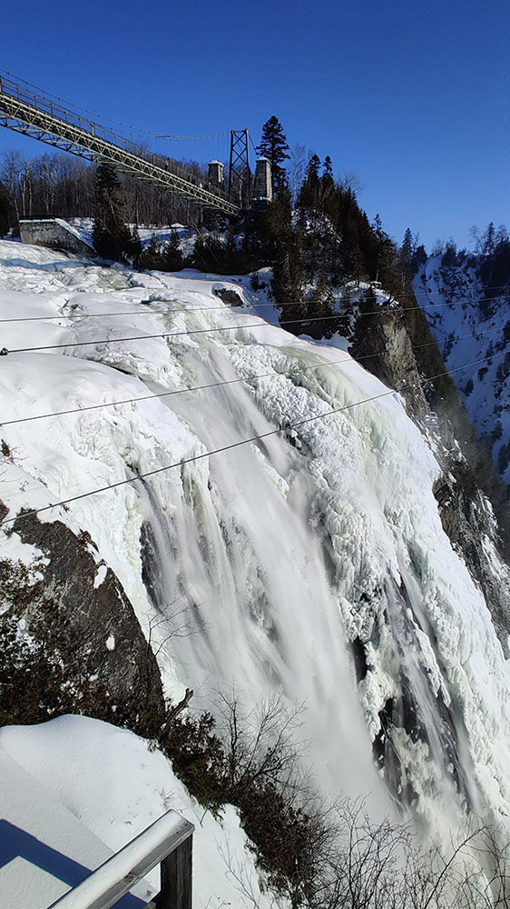
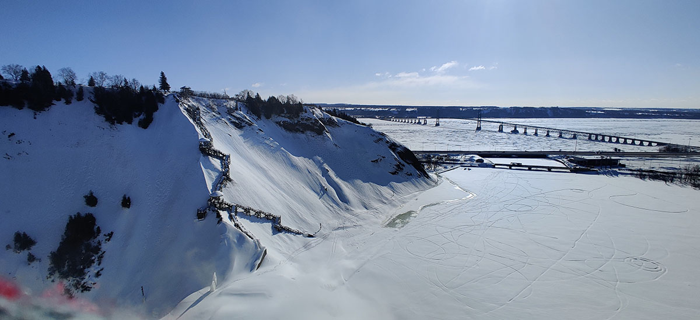
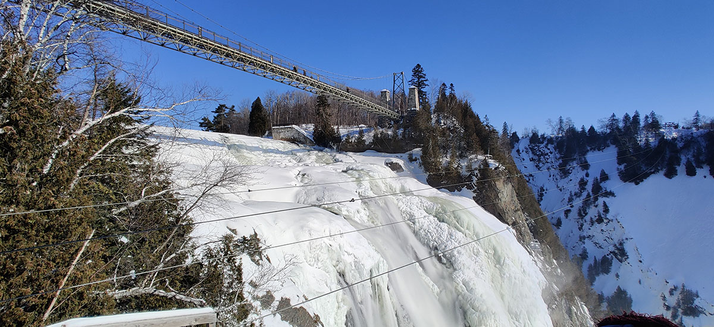
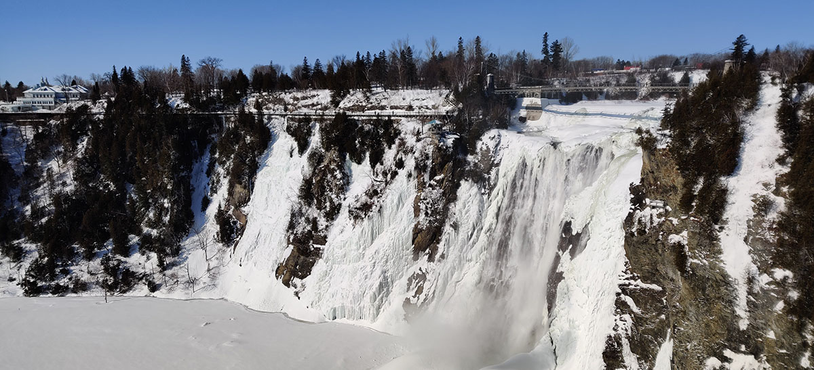
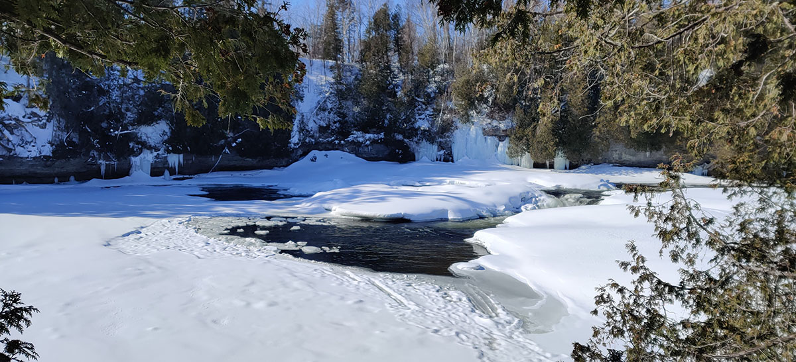
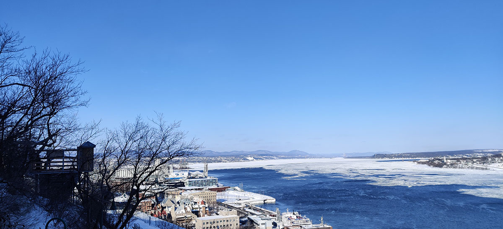
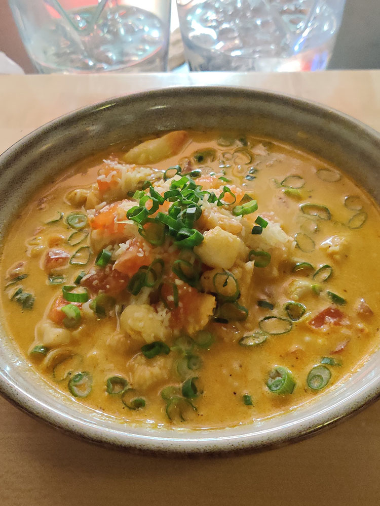
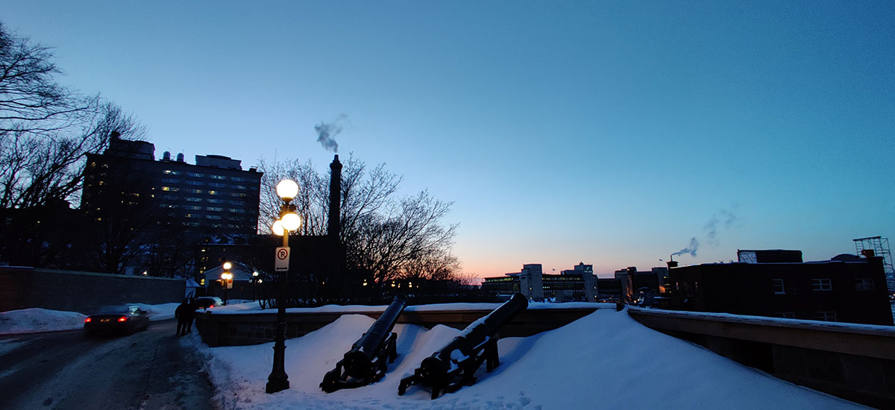

魁北克城郊坐800路一个小时的地方，有一个叫做Montmorency Falls的瀑布，不知道是哪个旅行社给它起了一个闪亮的中文翻译“水晶瀑布”。本来我打算今天在市内逛逛、明天去这个瀑布，但是临时调了一下两天的顺序。我记得当时前台小哥告诉我坐到终点站就好了，而且我看地图上显示这个瀑布周围一圈都做成了公园，官网和Tripadvisor也没有人说关于入口怎么找的问题。结果到了终点站才发现公园一圈全部都被围起来了，而且前面不远处本来有个门，也被专门封上了，上面贴了个告示牌说冬天请从Manoir Montmorency那边进入。我这才意识到在倒数第三站下车的几个游客模样的外国人为什么用看智障的眼神看着不下车的我，但是他们是在哪里找到这么详细的攻略的，怎么我反复确认都没找到这个关键情报啊？
此处必须批评Montmorency Falls官网粗糙模糊的文案。不过倒是有一点好，那就是官网和其他任何地方都没有写景区开放时间，并且景区的门的确一直开着，但是售票处却10点才开门。我到的时候才刚刚九点，还老实地在售票厅门口纳闷了一小会，正好碰上了一个走进来的英语捉急的大妈，她说她住这里面，听口音多半是个华人：“Maybe 10. So it’s uhh free now, you just go inside.”好吧，活该你们官网什么都不写，大家记住了奥，冬天来这边玩请一定10点之前进来，可以省下5刀门票钱。
从这里进来是到了瀑布的右侧，本来绕着这个瀑布一圈修建了360度的观景栈道，从这里进来，在瀑布的正上方有一个吊桥，走到瀑布左侧，然后有一个沿山下去的楼梯，连接到瀑布下游湖泊处的另一座桥，再回到右侧沿另一条楼梯上山。但是在冬天，下山楼梯和下游的桥关闭了，只剩下了180度。哦对了，看到这里我也大概从各个标识牌中知道了冬天的法语是Hiver。在Hiver一同关闭的还有瀑布上空一条超长的滑索，如果是在夏天，冲一波这个滑索一定特别刺激。
不过Hiver呢也有它的好处，这个时候瀑布的一大半都被冻住了，结冰的瀑布挂在悬崖上那真的叫一个奇观。上游下游的河面也基本上都被冻住，还覆盖了一层雪，就仿佛是瀑布从地底不知道哪里钻了出来，然后在断崖处给你头皮发麻地，完事儿了又钻进了地底。这个比喻真的不太行，我们还是看图吧。
 
幸亏昨天买了副手套，魁北克城本来就比蒙特利尔冷，这里又是城郊，站在瀑布旁顶着零下22度的风，拍个照片都生怕自己手一麻把手机给掉下去了。我刚刚拍了几张照之后，后面突然冲出来一队中学生旅游团，并且赶在我前面上了吊桥。他们一波走过去整个桥都在晃，这一晃把我八百年没恐过的高都给晃了出来，毕竟脚底下是万丈悬崖啊，还有瀑布轰隆隆的声音，而且在冬天脚底下完全是白色，显得落差就更高了。就感觉腿脚一软，赶紧抓住了扶手，慢悠悠地贴着墙蹭到桥那头，另一只手还执着地握着手机想拍照。还好桥那头有另外一个出口，我是再也不想走第二遍了。

现在我们只走过了90度，由于积雪太厚，冬天这边的180度都没有连起来，剩下的90度需要从另一个出入口的售票厅后面走过去。期间我还试图踩了踩旁边厚厚的积雪，成功把自己的鞋子里弄进了好多雪，又得脱下手套躺在雪地里拖鞋抖雪，于是手也被冻傻了，鞋子里的冰雪也抖不干净，现在完完全全成了一只只能走企鹅步的冰雕。依稀记得下公交的地方有一个麦当劳，现在只想拍完照赶紧冲进去来一杯Venti的热咖啡！

但是一个人旅游嘛总是充满好奇心，本来从出口出来走过一个桥就是麦当劳，偏给我发现桥下有一条徒步小道，我还真就去探索一番了。原来这个桥横跨的是瀑布上游的河流，而这个步行道则是顺着河流往上游走的一条。它和之前皇家山的雪鞋道一样，在沿途的树上挂了一条指示牌。我顺着走了一段距离，发现前面还挺长，也回不去，地图显示前面是一个高尔夫球场，似乎也没什么看头，于是便打道回府。如果当时没有把自己鞋子弄进雪，或许我还愿意沿着这条道一直走下去，然后在某个地方过河沿着对岸走回来。
前人在树上画的雪人  瀑布上游一处冰化开的地方
在麦当劳解决了吃饭问题，中午回青旅冲了个热水澡，换上另一双鞋，下午再度出发去南边的国家战争公园看一看。这里可以从一条Promenade des Gouverneurs的步行栈道从老城区一直走过去，沿途还能欣赏到圣劳伦斯河的风光。因为大雪，公园似乎也没什么亮点，能看到有一些人在公园上滑雪。至于围绕老城区一圈的城墙，本来是可以上去走一圈的，因为大雪也关闭了。

晚饭参照网上的游记找到了老城区这家叫Bistro St-Malo的餐馆，我真是信了他们的鬼话说这里便宜，这种讲究头盘和主菜的法餐店都是一个货色，和昨天的兔肉餐厅一样贵。我猜所谓的便宜可能是他们中午开门的时候才有更便宜的套餐选项吧。我就点了一份海鲜乱炖，虽然上来一盘连淀粉都没有，就像一碗汤，倒是勉强能吃饱，毕竟这就去了20多刀，再让我加是不可能再加的了。


回程路上的夕阳很美
Last modified on 2020-02-23